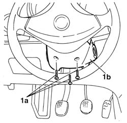
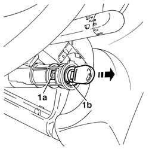
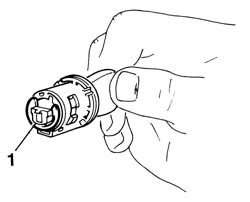
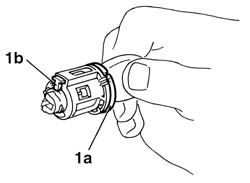
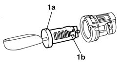
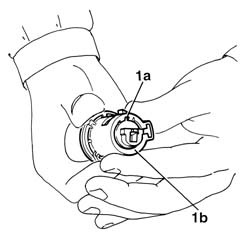

5520A14 ignition key block - r+r
- Path
- Procedures > 55 ELECTRICAL EQUIPMENT > 5520 ENGINE STARTING > 5520A ignition switch > 5520A14 ignition key block - r+r
- Kind
- repair procedure (removal / refitting; the operation number is the code)
- Applies to
- all engines; all production periods
- Interactive page
- https://sloeber94.github.io/elrnDB-a156/en/#/3238410
Applies to: all engines; all production periods
Applies to: all engines; all production periods
 Removing
Removing
 Refitting
Refitting1. Unloose fixing screws (1a) and remove steering column guard (1b).

Applies to: all engines; all production periods
Insert ignition key in its block and turn it in "running" position.
1. Press (by a screwdiver) on stop tooth (1a) and withdraw control block (1b) from ignition switch.

Applies to: all engines; all production periods
1. Remove stop ring placed in the rear side of switch control block.

Applies to: all engines; all production periods
1. Press lever (1a) connection parking lights and turn the key to make pin (1b) place in proper slit.

Applies to: all engines; all production periods
1. Partially withdraw key from block to make block (1a) lower, pass through proper slit and withdraw key block (1b).

Applies to: all engines; all production periods
Refitting
Removing1. Insert key in block up to bottom slide. Partially withdraw key from block to make block (1a) lower and insert block with key in the proper seat (1b).

Applies to: all engines; all production periods
Mount elastic stop ring on ignition key block rear side.
Mount key block in ignition switch.
Test block functionality.
Mount steering column guard.